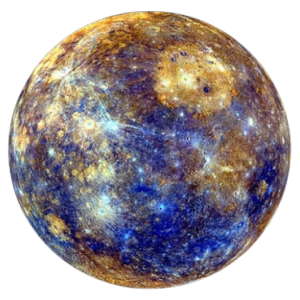
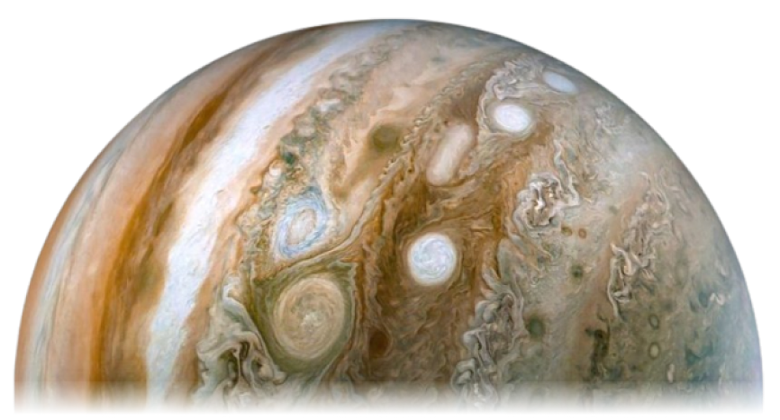

ПЛАНЕТИ СОНЯЧНОЇ СИСТЕМИ

Меркурій
Мерку́рій — найближча до
Сонця планета Сонячної системи. Обертається навколо Сонця за 87,969 земної доби. Меркурій належить до внутрішніх планет, оскільки його орбіта лежить ближче до Сонця, ніж пояс астероїдів. Після позбавлення Плутона статусу планети Меркурій є найменшою планетою Сонячної системи.
Венера
Вене́ра — друга від Сонця та шоста за розміром планета
Сонячної системи.
Період обертання навколо Сонця — 224,7 земних діб. Названа на честь Венери, богині кохання з римського пантеону. Це єдина з восьми планет Сонячної системи, яка отримала назву на честь жіночого божества. За розміром майже така ж, як і Земля.
Земля
Земля́ — третя від Сонця планета Сонячної системи, єдина планета, на якій відоме життя, домівка людства. Земля належить до планет земної групи і є найбільшою з цих планет у Сонячній системі. Землю інколи називають світом, латинською назвою Терра або грецькою — Гея.

Марс
Марс — четверта планета Сонячної системи за відстанню від Сонця. Відома з давніх часів, оскільки є одним з найяскравіших об'єктів на небі та видима неозброєним оком. Названа на честь
Марса — давньоримського бога війни. Іноді Марс називають «червоною планетою» через червонуватий колір поверхні, який є наслідком наявності великої кількості мінералу маґгеміту — γ-оксиду заліза(III).

Юпітер
Юпі́тер — п'ята від Сонця та найбільша планета Сонячної системи. Відстань Юпітера від Сонця змінюється в межах від 4,95 до 5,45 а. о. (740—814 млн км), середня відстань 5,203 а. о. (778 млн км). Разом із Сатурном, Ураном і Нептуном Юпітер класифікують як
газового гіганта.

Сатурн
Сату́рн — шоста за віддаленістю від Сонця та друга за розмірами планета Сонячної системи. Сатурн швидко обертається навколо своєї осі (з періодом — 10,23 години), складається переважно з рідкого
водню і
гелію, має товстий шар
атмосфери. Навколо Сонця Сатурн обертається за 29,46 земного року на середній відстані 1427 млн км. Екваторіальний діаметр верхньої межі хмар — 120 536 км, а полярний — на кілька сотень кілометрів менший[джерело?]. В атмосфері Сатурна міститься 94 % водню і 6 % гелію (за об'ємом). Його маса у 95 разів більша за масу Землі, магнітне поле трохи слабше за земне. Вважається, що Сатурн має невелике ядро з силікатів і заліза, покрите льодом і глибоким шаром рідкого водню. За останніми даними відомо про існування 145 природних супутників Сатурна, найбільший із яких — Титан.
Уран
Ура́н — планета Солнечной системы, седьмая по удалённости от Солнца, третья по диаметру и четвёртая по массе. Была открыта в 1781 году английским астрономом Уильямом Гершелем и названа в честь греческого бога неба Урана.
Нептун
Непту́н — планета Сонячної системи, восьма за віддаленістю від Сонця. Вона четверта за розміром у Сонячній системі, третя за масою і належить до планет-гігантів. Її орбіта перетинається з орбітою Плутона в деяких місцях. Також орбіту Нептуна перетинає
комета Галлея. Маса Нептуна у 17,2 раза, а діаметр екватора у 3,9 раза більший за земний. Планета названа на честь римського бога морів. Його астрономічний символ — стилізована версія тризубця Нептуна.